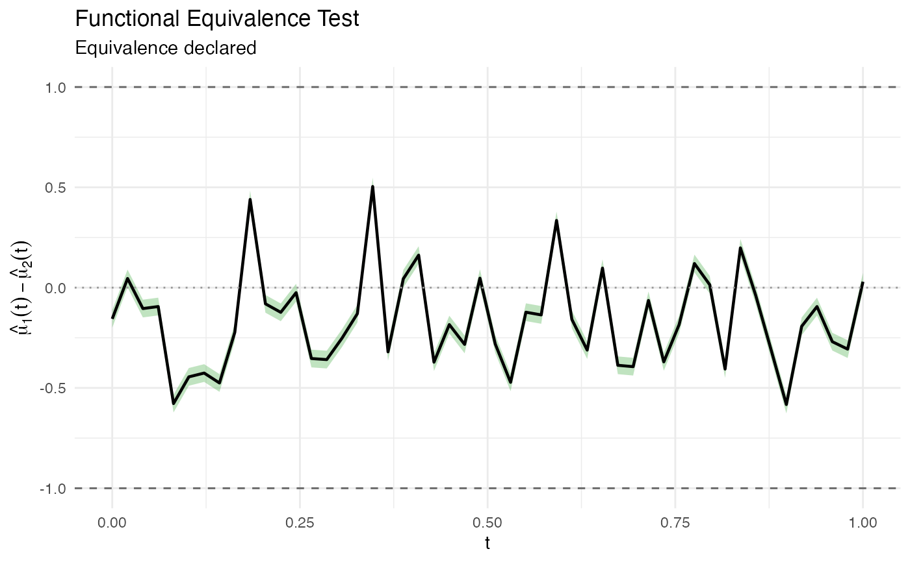

Tests whether two functional means are equivalent within an equivalence
margin delta, based on the supremum norm. Uses the approach of
Dette & Kokot (2021) with a simultaneous confidence band.
Usage
fequiv.test(
fdataobj1,
fdataobj2 = NULL,
delta,
mu0 = NULL,
n.boot = 1000,
alpha = 0.05,
method = c("multiplier", "percentile"),
seed = NULL
)Arguments
- fdataobj1
An object of class
fdata(first sample).- fdataobj2
An object of class
fdata(second sample), or NULL for a one-sample test.- delta
Equivalence margin (positive scalar). The test checks whether the sup-norm of the mean difference is less than
delta.- mu0
Hypothesized mean function for one-sample test. A numeric vector, a single-row
fdata, or NULL (defaults to zero).- n.boot
Number of bootstrap replicates (default 1000).
- alpha
Significance level (default 0.05). The SCB has coverage 1-2*alpha.
- method
Bootstrap method:
"multiplier"(Gaussian multiplier, default) or"percentile"(resampling).- seed
Optional random seed for reproducibility.
Value
An object of class fequiv.test with components:
- statistic
Observed sup-norm of the mean difference
- delta
Equivalence margin used
- critical.value
Bootstrap critical value for the SCB
- scb.lower
Lower bound of simultaneous confidence band
- scb.upper
Upper bound of simultaneous confidence band
- diff.mean
Estimated mean difference curve (numeric vector)
- reject
Logical; TRUE if equivalence is declared
- p.value
Bootstrap p-value
- alpha
Significance level used
- method
Bootstrap method used
- argvals
Argument values (time grid)
- n1
Sample size of first group
- n2
Sample size of second group (NA for one-sample)
- boot.stats
Vector of bootstrap sup-norm statistics
- data.name
Description of input data
Hypotheses
- H0
sup_t |mu1(t) - mu2(t)| >= delta (NOT equivalent)
- H1
sup_t |mu1(t) - mu2(t)| < delta (equivalent)
Equivalence is declared when the entire (1-2*alpha) simultaneous confidence
band for the mean difference lies within [-delta, delta].
References
Dette, H. and Kokot, K. (2021). Detecting relevant differences in the covariance operators of functional time series. Biometrika, 108(4):895–913.
Examples
set.seed(42)
t_grid <- seq(0, 1, length.out = 50)
X1 <- fdata(matrix(rnorm(30 * 50), 30, 50), argvals = t_grid)
X2 <- fdata(matrix(rnorm(25 * 50, mean = 0.1), 25, 50), argvals = t_grid)
# \donttest{
result <- fequiv.test(X1, X2, delta = 1, n.boot = 500)
print(result)
#> Functional Equivalence Test (TOST)
#> ===================================
#> Data: X1 and X2
#> Two-sample test, n1 = 30 , n2 = 25
#> Bootstrap method: multiplier
#> Equivalence margin (delta): 1
#> Significance level (alpha): 0.05
#> ---
#> Test statistic (sup|d_hat|): 0.5827
#> Critical value: 0.0442
#> SCB range: [ -0.6269 , 0.5484 ]
#> P-value: <2e-16
#> ---
#> Decision: Reject H0 -- equivalence declared
plot(result)

# }